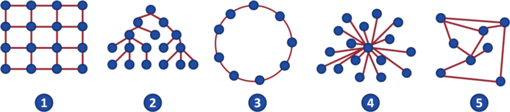
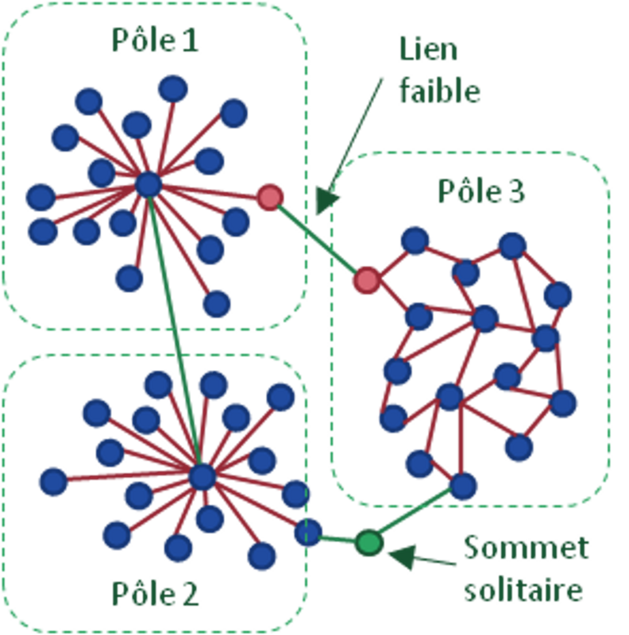
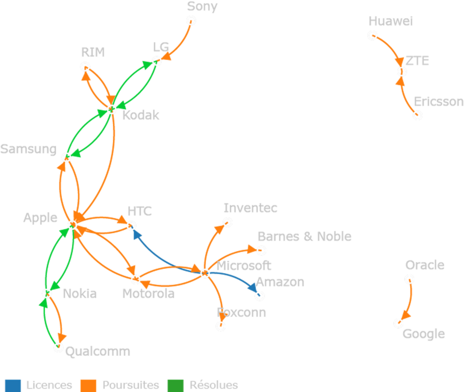

Historique
L'histoire des tracés de graphes remonte au XVIIIe siècle avec le problème des sept ponts de Königsberg, considéré comme le point de départ de la théorie des graphes. Cependant, la formalisation et l'utilisation systématique des graphes ont émergé au cours des siècles suivants.
- Problème des sept ponts de Königsberg (1736) et théorie des graphes d'Euler (1736-1741) : Le mathématicien suisse Leonhard Euler a résolu ce problème en introduisant la notion de graphe : les terres et les ponts sont représentés par des points et des lignes. A travers ce graphe, il a montré qu'il était impossible de traverser chaque pont une seule fois tout en revenant au point de départ. Il a ensuite proposé les nœuds, les arêtes, les degrés des nœuds et les circuits, jetant ainsi les bases de la théorie moderne des graphes.
- Développement de la théorie des graphes (XIXe siècle) : Les mathématiciens comme Gustav Kirchhoff et Sir William Hamilton ont contribué à l'expansion de la théorie des graphes en introduisant des concepts tels que les arbres, les cycles et les circuits hamiltoniens.
- Applications pratiques (XXe siècle) : Au cours du XXe siècle, la théorie des graphes a trouvé des applications dans divers domaines, notamment en informatique, en recherche opérationnelle, en réseaux, en biologie, et en sciences sociales. Les travaux de Claude Shannon, un pionnier de la théorie de l'information, ont également renforcé l'importance des graphes dans la modélisation des circuits.
- Informatique et visualisation de graphes (XXe siècle — aujourd'hui) : Avec le développement de l'informatique, la visualisation de graphes est devenue plus accessible. Des algorithmes ont été développés pour tracer automatiquement des graphes, et des logiciels spécialisés ont été créés pour aider à analyser visuellement les relations complexes.
Aujourd'hui, les graphes et leurs tracés sont utilisés dans de nombreux domaines, de la modélisation de réseaux sociaux à l'analyse de données, en passant par la conception de circuits électriques et bien plus encore. La théorie des graphes continue d'évoluer avec les avancées technologiques et les nouvelles applications émergentes.
Pourquoi des graphes ?
Crédit : Mike Bostock
Un graphe permet de représenter graphiquement les relations d’un ensemble de points (sommets / nœuds) en les reliant par des arêtes (arcs / liens).
Les graphes de réseau permettent de modéliser, visualiser et d’analyser la structure des relations et d'identifier des motifs significatifs.
Voici quelques éléments clés liés à un graphe de réseau :
- Sommets (nœuds) : Représentent les entités individuelles du système.
- Arêtes (ou liens) : Représentent les connexions entre les nœuds.
- Attributs : Les nœuds et les arêtes peuvent avoir des attributs supplémentaires qui fournissent des informations sur chaque entité ou sur la relation entre les entités (ex. couleur et taille des sommets, couleur et épaisseur des arêtes).
- Orientation : Les graphes de réseau peuvent être orientés ou non orientés. Dans un graphe orienté, les arêtes ont une direction, indiquant une relation unidirectionnelle entre les nœuds. Dans un graphe non orienté, les arêtes ne sont pas directionnelles.
- Chaine et chemin : Dans un graphe, une chaîne reliant deux sommets x et y est définie par une suite finie de liens consécutifs reliant x à y. Ces liens ne sont pas nécessairement orientés dans le même sens. En revanche, un chemin est une chaîne dont tous les liens sont orientés dans le même sens.
Le graphe et ses variantes
Les graphes de réseau sont utilisés dans de nombreux autres domaines où la représentation visuelle des relations entre des entités est utile : réseaux informatiques, réseaux sociaux, réseaux de transport, les réseaux électriques...
Graphe non orienté
C’est le graphe le plus basique.

Graphe orienté
Un graphe est orienté si ses arêtes ont un sens de parcours.

Graphe étiqueté
Un graphe est étiqueté si ses arêtes sont affectées d'étiquettes (mots, lettres, symboles, nombres…)
- Dans le cas où les étiquettes sont des nombres, le graphe est dit pondéré. Les étiquettes sont appelées les poids entre les sommets.
- Le poids de la chaîne ou d'un chemin est la somme des poids des arêtes constituant la chaîne (respectivement le chemin)

Graphe avec attributs

Topologies
Source : Wikipédia
Il existe trois grandes familles de graphes et cinq catégories au total :
- Structuré : les quatre topologiques suivantes peuvent être définies :
- Homogène (1) : les sommets et les arêtes reproduisent un schéma régulier. Le schéma le plus commun est une structure en filet de poisson (mesh) : architecture de type matricielle ;
- Hiérarchique (2) : structure typique des graphes où les sommets s'arrangent en couches hiérarchisées et pyramidales : un arbre ;
- Cyclique (3) : on peut identifier des cycles dans le graphe. L'exemple le plus parlant est le graphe circulaire ;
- Centralisé ou polaire (4) : c'est une architecture dans laquelle tous les sommets sont rattachés à un seul sommet, le pôle ;
- Quelconque (5) : aucune propriété topologique ne semble émerger
- Multipolaire :
source : Wikipédia
C'est une architecture mixte entre un graphe centralisé et décentralisé. Les réseaux multipolaires sont étudiés en raison de leur proximité avec de nombreux cas concrets,
notamment Internet ou les réseaux de neurones. Les graphes multipolaires sont caractérisés par deux types d'arêtes : celles qui forment les liens émanant du pôle : les liens forts ; et les liens réunissant deux pôles entre eux : les liens faibles. Les pôles peuvent par ailleurs prendre une architecture structurée (souvent centralisée) ou quelconque.
Alternatives aux graphes
Il y a de nombreuses alternatives comme les diagrammes en cordes, en arc, les dendrogrammes, les diagrammes de flux, examinés dans d’autres chapitres de ce guide.
Recommandations
Les données
- Le jeu de données doit contenir à minima : Liste des nœuds (ou des entités) - ex : personnes ou organisations. Liste des arêtes (ou des liens) - ex : relations entre les personnes.
- Mais aussi Direction des arêtes - ex : qui suit qui dans un réseau social. Attributs des nœuds - ex : âge, le sexe, la localisation… Attributs des arêtes: - ex des transports : capacité d'une route ou la fréquence des voyages entre deux points.
Recommandation 1
- Utiliser le graphe pour chercher les points d’intérêt
Après avoir représenté un graphe de réseau, identifiez les nœuds clés, les connexions et les motifs significatifs, les nœuds ou des groupes de nœuds importants, les chemins entre les nœuds et examinez les attributs et les informations pertinentes qu’elles révèlent.
Ce travail permet de mettre en lumière des aspects du réseau qui ne sont pas visibles au premier abord. Cela permet d’enrichir et d’améliorer le rendu du graphe.
Recommandation 2
- Rendre le graphe plus lisible
Organisez les nœuds de manière à mettre en évidence des structures ou des modèles que vous jugez importants et assurez-vous d'étiqueter les nœuds et les arêtes pour que les lecteurs puissent facilement comprendre ce qu'ils représentent.
Recommandation 3
- Évitez les graphiques surchargés
Trop d'informations peuvent rendre un graphe illisible. Assurez-vous de supprimer les éléments non essentiels et de simplifier autant que possible pour maintenir la clarté.
Exemple 1 : Les Misérables
Réseau de personnages des “Misérables”, codant les interactions entre les personnages du roman de Victor Hugo. Les 77 nœuds correspondent aux personnages du roman. Les 254 arêtes relient deux personnages chaque fois qu'ils apparaissent ensemble.

Exemple 2 : Poursuites en matière de brevets mobiles
Crédit : Mike Bostock
Exemple 3 : Monde connecté : démêler le réseau du trafic aérien
Les gens voyagent non seulement plus fréquemment, mais aussi de plus en plus loin et de plus en plus vite. Cartographier les connexions entre tous les aéroports du monde est un exercice fascinant de visualisation de réseau.

Outils
Nous vous proposons des diagrammes, des variantes et des lignes directrices, mais peut-on les mettre en œuvre concrètement avec les outils graphiques ?
La liste des logiciels de visualisation de données est longue et en faire une analyse exhaustive serait fastidieuse et peu pratique à utiliser. Nous avons choisi quelques outils connus, facile d’accès pour des débutants et qui permettent d’exporter les graphiques dans un format vectoriel .svg (sauf pour l’outil Tableau Software).
Dans ce format, les diagrammes se composent d’un ensemble d’objets graphique (polygones, lignes, cercles et textes) qu’il est possible d’importer dans des outils de présentation tels que PowerPoint, Draw ou des outils vectoriels dédiés comme Illustrator ou son équivalent libre Inkscape. Il est alors possible de faire manuellement des modifications qui ne sont pas ou difficilement réalisables avec l’outil de dataviz.
Sélection d’outils
Il existe beaucoup d’outils de visualisation de graphes de réseau, voici quelques-uns des outils de graphes les plus populaires :
Gephi :
- Gephi est un logiciel open source spécialisé dans la visualisation et l'exploration de graphes. C’est l’outil utilisé par Hans Rosling lors de sa célèbre conférence TED “The best stats you’ve ever seen”.
Observablehq (Sigma.js, d3.js) :
- Sigma.js est une bibliothèque JavaScript de visualisation de graphes qui permet d'intégrer des visualisations interactives dans des applications web. Bibliothèque plus facile à utiliser que d3.js qui permet aussi de construire des graphes. Retrouvez des exemples sur la plateforme observableHQ ici ou là ou encore là.
Cytoscape :
- Cytoscape est un outil open source de visualisation de réseaux biologiques, mais il est également utilisé dans d'autres domaines. Il offre des fonctionnalités avancées pour l'analyse de réseau, la personnalisation de la visualisation, et la création de plugins.
Neo4j :
- Neo4j est une base de données de graphes orientée propriétaire. Elle offre des fonctionnalités de stockage et de requête de graphes, et son interface web permet de visualiser les graphes.
Le choix de l'outil dépendra de divers facteurs, notamment la taille et la complexité de votre jeu de données, vos compétences techniques, vos besoins en termes d'analyse de réseau, et vos préférences en matière d'interface utilisateur. Les tableurs ne permettent pas la réalisation de graphes.